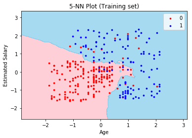
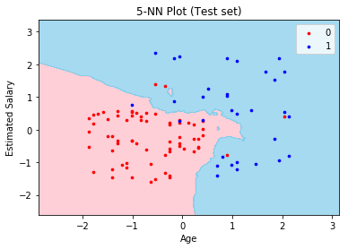
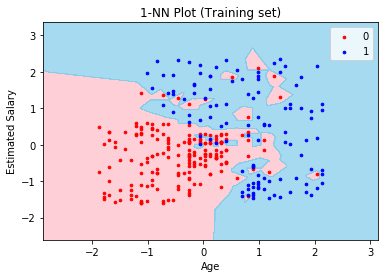
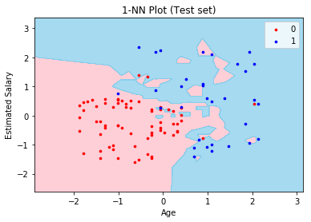

Ｋ－Ｎｅａｒｅｓｔ Ｎｅｉｇｈｂｏｒｓ （Ｋ－ＮＮ）
ＲＡＷ ＤＡＴＡ

❀ Ｎｏｎ－Ｌｉｎｅａｒ Ｃｌａｓｓｉｆｉｅｒ ｗ／ Ｋ－ＮＮ：
1. Choose k (odd number): # of nearest neighbour data points to consider during training.
2. For each training point, select k nearest points.
3. Return the majority class of the k nearest points.
❀ Ｓｃｅｎａｒｉｏ：
You are given a dataset containing info of 400 website users with each user's age, salary, and whether or not she/he purchased the car. By analyzing this data, you are asked to predict if a new user with known age and salary will likely to purchase the car or not.
❀ Ｐｙｔｈｏｎ Ｃｌａｓｓｅｓ Ｕｓｅｄ：
✣ (from sklearn.neighbors) KNeighborsClassifier
✣ (from sklearn.preprocessing) StandardScaler
✣ (from sklearn.model_selection) train_test_split
✣ (from matplotlib.colors) ListedColormap
❀ Ｒ Ｐａｃｋａｇｅｓ／Ｃｌａｓｓｅｓ Ｕｓｅｄ：
✣ class
✣ knn
✣ caTools
❀ Ｉｍｐｌｅｍｅｎｔａｔｉｏｎ ｉｎ Ｐｙｔｈｏｎ ＆ Ｒ：
*Try running the Python code & insert the new user's age and salary to see if she/he will purchase the car!*
https://github.com/lukysummer/k-Nearest-Neighbours
❀ Ａｃｃｕｒａｃｙ：

The above plot shows the training & test accuracies with varying k from 1 to 100. It can be observed that the training accuracy is 100% at k=1, then drops right after with a decreasing trend. On the other hand, test accuracy is low (0.88) at k=1, then goes up shortly after, stays high (~0.93) until around k=40, and starts decreasing for larger k values. The observation at k=1 can be explained by overfitting. Optimal value of k with highest training/test accuracy combination is found out to be 5 (with Training Accuracy = 0.9166666666666, Test Accuracy = 0.93).
❀ ＲＥＳＵＬＴＳ：
 
The two graphs above show the scatter plots of the raw training points (left graph) & raw test points (right graph): red dots for Not Purchased (0) & blue dots for Purchased (1), along with the non-linear decision boundary generated by fitting 5-NN to the training set. The model predicts that any new user with age & salary combination within the pink area will likely NOT purchase the car, while one within the blue area will likely purchase the car.
 
The two graphs above show the scatter plots of the raw training points (left graph) & raw test points (right graph): red dots for Not Purchased (0) & blue dots for Purchased (1), along with the non-linear decision boundary generated by fitting 1-NN to the training set. The traces of overfitting is evident in the graphs, as every single red training points including ones that are far from majority of the red points are considered for the decision boundary. This leads to incorrect prediction for the testing set that does not contain such outliers. Such is well-prevented in the 5-NN plots.